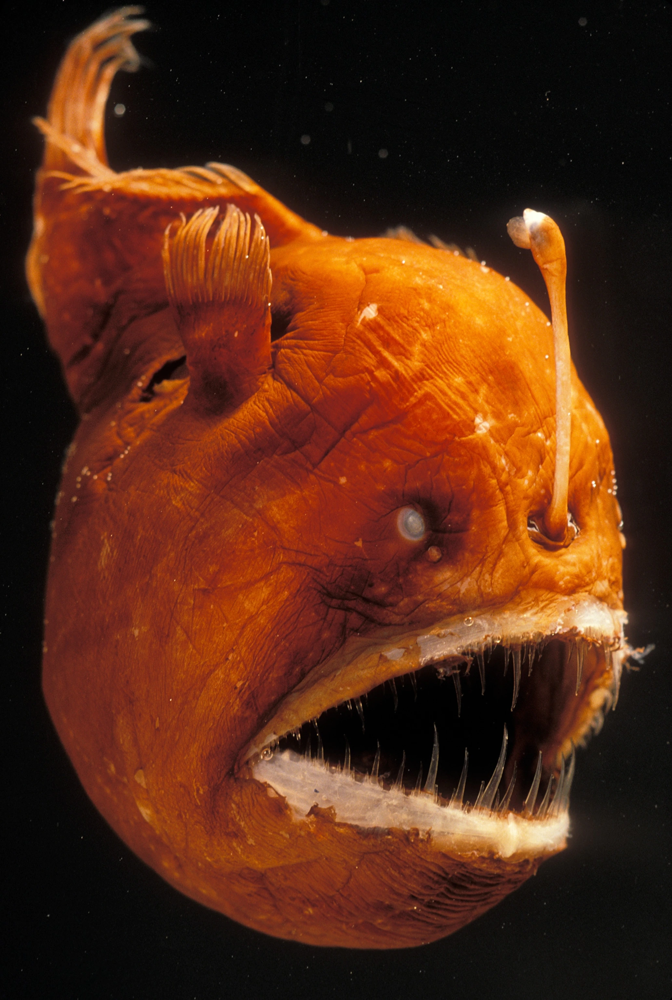
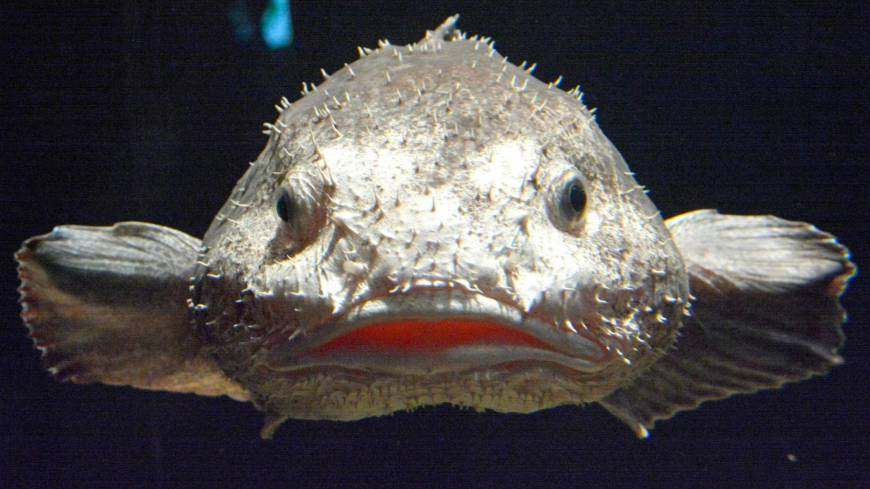
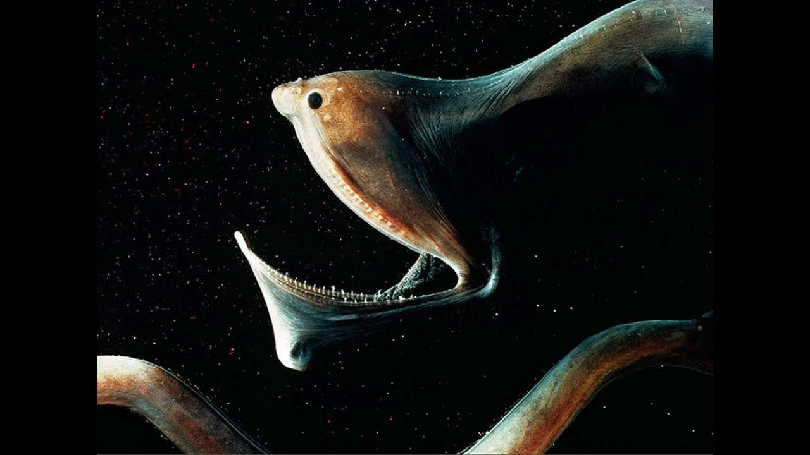

Deep Sea Creatures
Anglerfish
The anglerfish are fish of the teleost order Lophiiformes. They are bony fish named for their characteristic mode of predation, in which a modified luminescent fin ray (the esca or illicium) acts as a lure for other fish. The luminescence comes from symbiotic bacteria, which are thought to be acquired from seawater, that dwell in and around the esca. Some anglerfish are notable for extreme sexual dimorphism and sexual symbiosis of the small male with the much larger female, seen in the suborder Ceratiidae, the deep sea anglerfish. In these species, males may be several orders of magnitude smaller than females.
Blobfish
Psychrolutes marcidus, the smooth-head blobfish,[1] also known simply as blobfish, is a deep-sea fish of the family Psychrolutidae. It inhabits the deep waters off the coasts of mainland Australia and Tasmania, as well as the waters of New Zealand. Blobfish are typically shorter than 30 cm (12 in). They live at depths between 600 and 1,200 m (2,000 and 3,900 ft), where the pressure is 60 to 120 times greater than that at sea level, which would likely make gas bladders inefficient for maintaining buoyancy. Instead, the flesh of the blobfish is primarily a gelatinous mass with a density slightly less than that of water; this allows the fish to float above the sea floor without expending energy on swimming. The blobfish has a relative lack of muscle, but this is not a disadvantage, as its main food source is edible matter that floats in front of it, such as deep-ocean crustaceans.
Pelican Eel
The pelican eel (Eurypharynx pelecanoides) is a deep-sea eel rarely seen by humans, though it is occasionally caught in fishing nets. It is the only known member of the genus Eurypharynx and the family Eurypharyngidae. It belongs to the "saccopharyngiforms", members of which were historically placed in their own order, but are now considered true eels in the order Anguilliformes. The pelican eel has been described by many synonyms, yet nobody has been able to demonstrate that more than one species of pelican eel exists. It is also referred to as the gulper eel (which can also refer to members of the related genus Saccopharynx), pelican gulper, and umbrella-mouth gulper. The specific epithet pelecanoides refers to the pelican, as the fish's large mouth is reminiscent of that of the pelican.
